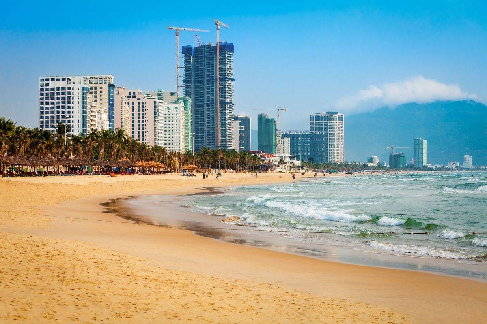

This website introduces popular places to visit in Da Nang, a coastal city in central Vietnam. It is known for its clean beaches, modern bridges and nearby mountains.
Each photo below shows one place that visitors should see, from the seaside and the river to the hills. Together they give a short picture of what makes the city special.
